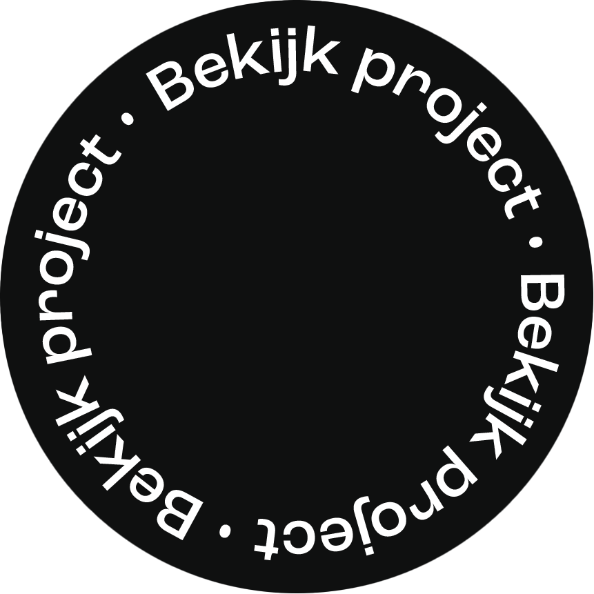
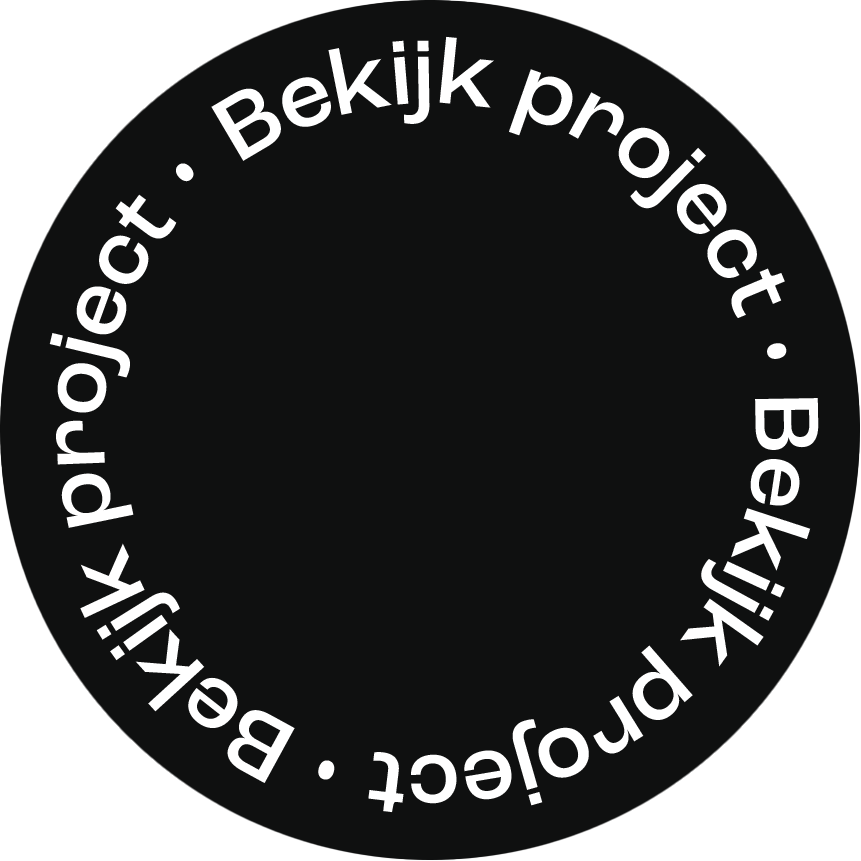

Scope
Front–end Development, Responsive design, Semantic structure, Digital Design.
 

Front–end Development, Responsive design, Semantic structure, Digital Design.
2023
HvA – Front–end Development
Front–end Development


Paradiso is een bekende poppodium in Amsterdam en staat bekend om zijn brede aanbod aan concerten en evenementen. De website speelt daarbij een belangrijke rol, want die is voor veel bezoekers het eerste contact met Paradiso.
In dit project heb ik 2 pages van de website van Paradiso nagemaakt, waarbij het doel was om de website volledig zelf te coderen op een semantisch correcte manier. Ik heb me gericht op het maken van de homepagina en de nieuwspagina, twee belangrijke onderdelen van de site. Dit project heeft niet alleen mijn vaardigheden versterkt, maar ook nieuwe technieken leren toepassen.


Bekijk de website hier